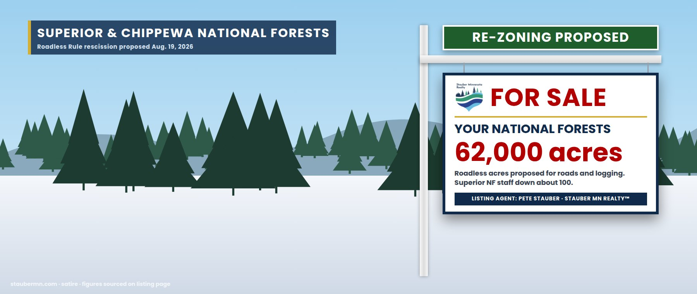

The Northwoods Timber Estate — Superior & Chippewa National Forests
From the Chippewa near Cass Lake to the Superior around the Boundary Waters · MN-08
Your backyard, re-zoned
Minnesota’s two national forests — the Superior, wrapped around the Boundary Waters, and the Chippewa, around Cass Lake and Leech Lake — are the 8th District’s backyard: deer camp, grouse trails, blueberry patches, logging jobs, and the 1854 and 1855 treaty lands where Ojibwe bands hunt, fish and gather.
This fall the listing is being refreshed. On August 19, 2026, the U.S. Department of Agriculture proposed rescinding the 2001 Roadless Rule, which bars new roads and logging in inventoried roadless areas. In Minnesota that means about 62,000 acres in the Superior and Chippewa, including roadless land just outside the Boundary Waters boundary. Comments closed September 21.
The management staff has already been reduced. After early-2025 federal firings, the Superior National Forest was down about 100 employees, to roughly 250; the Boundary Waters recreation program that normally needs 27 people had positions for 10.
And the minerals were re-zoned. Agent Stauber’s resolution repealed the 20-year mineral withdrawal on 225,504 acres of the Superior — a withdrawal written to protect the Rainy River watershed, the Boundary Waters and the 1854 Ceded Territory. His own description of the protection he removed: “a direct attack on our way of life in northern Minnesota.”
How the backyard got re-zoned
| Date | Event | Details | Price |
|---|---|---|---|
| Jan 2023 | Protected | Public Land Order 7917 withdraws 225,504 acres of the Superior NF from mineral leasing for 20 years to protect the Rainy River watershed, the BWCA and the 1854 Ceded Territory.BLM / Earthjustice | 20-year hold |
| Feb 5, 2025 | Offer drafted | Agent reintroduces the Superior National Forest Restoration Act to overturn the withdrawal and restore Twin Metals’ leases: the withdrawal was “a direct attack on our way of life.”stauber.house.gov | — |
| Feb–Mar 2025 | Staff cut | Forest Service fires probationary employees nationwide (about 3,400 by the union’s count); the Star Tribune reports the Superior NF down about 100, to ~250.Star Tribune; Grist | −100 |
| Jan 21, 2026 | Accepted | House passes the agent’s H.J. Res. 140, 214–208.Roll Call 38 | YEA |
| Apr 27, 2026 | Sold | H.J. Res. 140 signed; mineral withdrawal repealed.Northern News Now | 225,504 acres |
| Aug 19, 2026 | Re-zoning proposed | USDA proposes rescinding the Roadless Rule; ~62,000 acres in Minnesota’s national forests affected.FOX 9; Quetico Superior Foundation | 62,000 acres |
| Sept 21, 2026 | Comments closed | Public comment period on the Roadless Rule rescission ends.Minnesota Trout Unlimited | — |
Staffing and zoning
Items the agent would prefer you skip
Seller’s Disclosure Statement
- Does this mean the Boundary Waters wilderness itself will be logged?No. The wilderness is protected by the 1964 Wilderness Act and 1978 BWCA Wilderness Act. The roadless acres in question are outside it — adjacent forest that buffers it.
- Did the agent propose the Roadless Rule repeal?No; USDA did. We list it because it lands in his district, and because he has spent his career arguing that federal protections on this forest are an attack on the region’s way of life.
- Who takes care of the forest now?Fewer people. The Superior lost about a hundred staff. Fire crews were largely spared the 2025 firings, but trail work, permits, recreation and visitor services were not.
- Correction to our earlier listingEarlier versions of this page listed claims about the agent’s forestry votes and a campaign quote we could not source. We removed them and rebuilt the page from the public record.
Similar properties in this neighborhood


Public records cited in this listing
- FOX 9, “Minnesota’s 62K acres of forests at risk as USDA moves to end ‘Roadless Rule’” (Aug. 2026)
- Quetico Superior Foundation, “Federal proposal would end Roadless Rule protections in the Superior National Forest”
- Minnesota Trout Unlimited, roadless comment deadline (Sept. 21, 2026)
- Star Tribune, “How will job cuts to federal land agencies affect Minnesota?”
- Rep. Stauber, “Stauber Reintroduces Superior National Forest Restoration Act” (Feb. 5, 2025)
- House Clerk, Roll Call 38 (Jan. 21, 2026): H.J. Res. 140; Stauber Yea
- Earthjustice, Senate vote on H.J. Res. 140 (Public Land Order 7917)
- Grist, “US Forest Service firings decimate already understaffed agency” (Feb. 2025)
- MPR News, Voyageurs down a quarter of its staff (Sept. 5, 2025)